Major Qualifying Project
Pickleball Biomechanics MQP
Development of a wearable biomechanical system for monitoring loaded ankle dorsiflexion during pickleball, with the goal of identifying potentially concerning ranges of motion.

Mechanical / Biomedical Engineering
Team-Based MQP
Biomechanics & Wearable Sensors
SolidWorks, MATLAB, Sensors
Overview
Project Overview
Pickleball involves rapid changes in direction, dynamic movements, and repeated loading that may contribute to injury risk. Our project began with the goal of developing a wearable system that could monitor movement and loading on the court and identify biomechanical patterns that may place a player at greater risk of injury.
The broader system concept included force sensing and multiple IMUs to capture a range of biomechanical metrics. As the project progressed, we focused the prototype on measuring loaded ankle dorsiflexion, using tibia-over-ankle angle as an indicator of ankle range of motion. The final system integrated a FeatherSense board into a custom heel cuff and an IMU into a shank-mounted hub. A MATLAB-based application calculated and displayed the angle in the sagittal plane, allowing users to monitor their range of motion and compare measurements between the left and right sides.
The Engineering Challenge
From Biomechanical Question to Measurement System
The original system concept was intended to capture multiple biomechanical measures associated with movement and loading during pickleball. A combination of force sensing and two IMUs would have allowed the system to characterize movement across multiple planes and provide a more comprehensive picture of potentially concerning movement patterns.
As the project scope was refined, we selected loaded ankle dorsiflexion as a focused metric that could provide meaningful information about lower-extremity movement while remaining achievable within the project constraints.
Loaded ankle dorsiflexion describes the forward movement of the tibia over the foot while the foot is planted and bearing load. A target range of approximately 15–30° was used as a reference for evaluating loaded ankle dorsiflexion. Measurements below this range may indicate reduced dorsiflexion and can be associated with altered movement strategies, potentially increasing demands on other joints or contributing to reduced stability.
The goal of the final system was therefore not to diagnose or prevent injuries directly, but to provide information about an individual's ankle range of motion. By monitoring the measurement on both sides and identifying values outside the target range, a user could recognize a potential limitation and take preventative measures, such as working to improve mobility or being more aware of movements that place them in potentially unfavorable positions.
System Design
Designing the Wearable Measurement System
The project began with a broader system concept intended to capture multiple biomechanical measurements during pickleball. The proposed architecture combined two IMUs with a force-sensing component to characterize movement and loading throughout play.
Proposed System Architecture
The original design used two IMUs to measure relative motion between the foot and shank, while a force-sensing component was intended to provide additional information about loading. Together, these measurements were intended to identify movement patterns that could indicate increased injury risk.
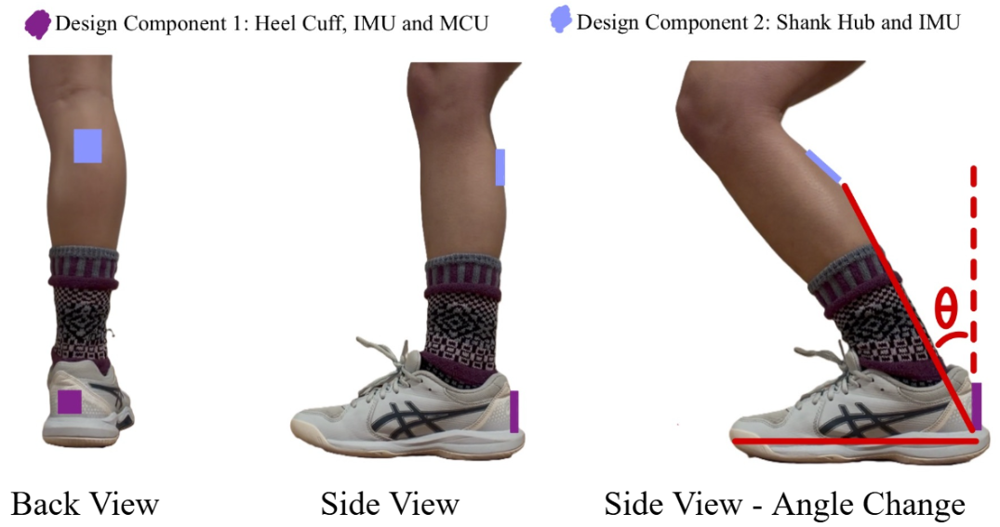
Final System Architecture
As the project progressed, the system was narrowed to focus on tibia-over-ankle angle, also referred to as loaded ankle dorsiflexion. The finalized system used an IMU positioned in the shank hub with the FeatherSense board housed within the heel cuff.
The sensing hardware communicated with a MATLAB-based application that calculated and displayed the tibia-over-ankle angle in the sagittal plane. This provided a practical way to monitor loaded ankle dorsiflexion during movement and record measurements for later evaluation.
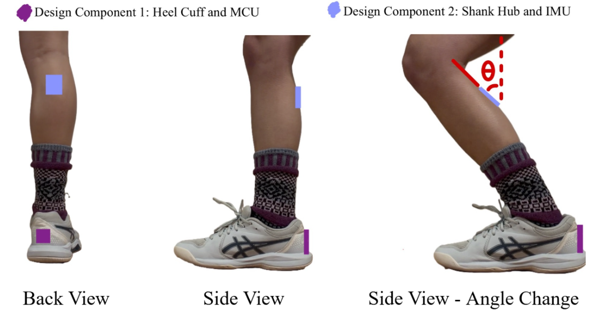
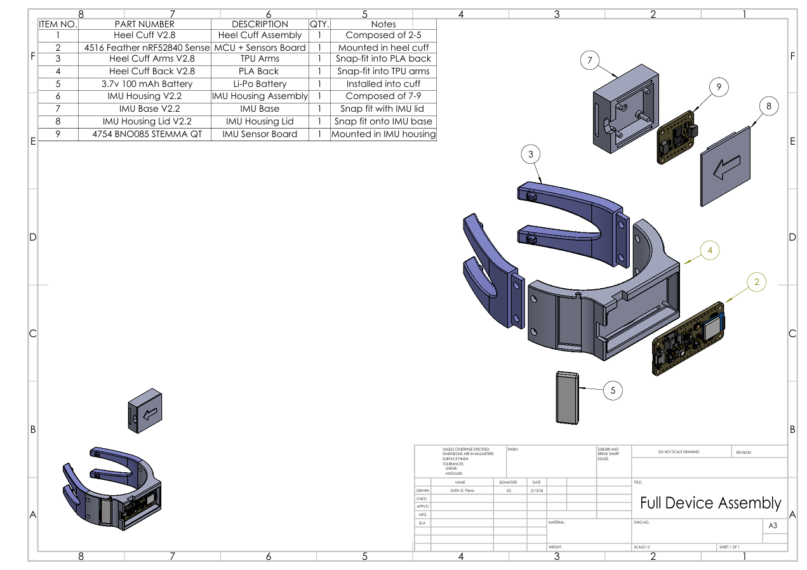
A two-IMU configuration would be required to directly capture relative motion across all three planes of motion. However, the project ultimately focused on sagittal-plane measurement, where the primary ankle motion of interest occurs.
Heel Cuff Development
The heel cuff was designed to securely house the FeatherSense board while maintaining a stable connection to the foot during movement. Because the device was intended to measure ankle motion during pickleball, the cuff needed to provide consistent positioning without significantly restricting natural movement.
The design progressed through several iterations as the team refined fit, component separation, wiring access, geometry, and manufacturability. Prototype testing helped identify issues that were not apparent in the initial CAD designs, leading to changes in the cuff dimensions and overall geometry.
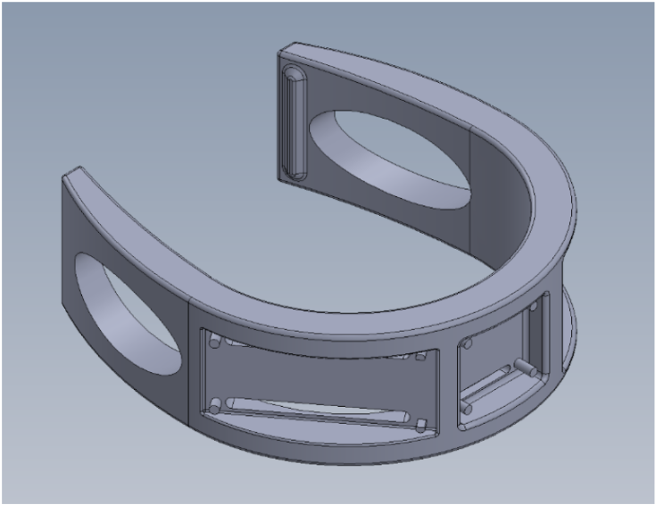
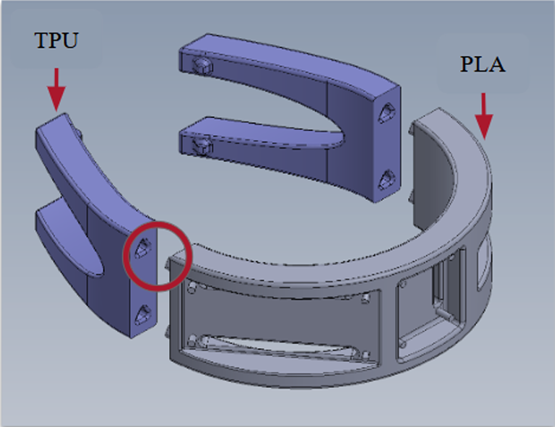
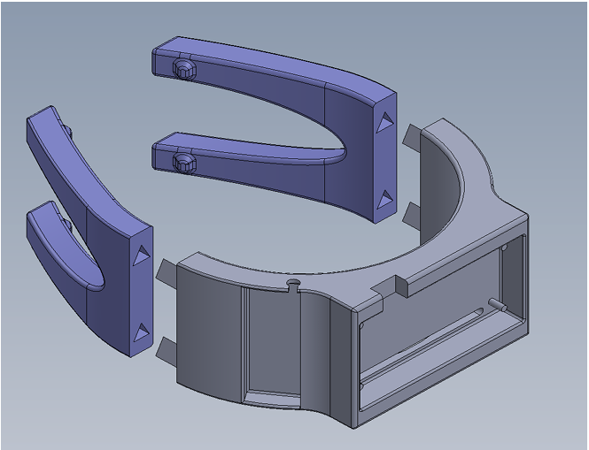
Shank Hub Development
The shank hub served as the mounting interface for the inertial measurement unit and provided a consistent reference location along the lower leg. Its geometry was developed around the size and positioning requirements of the IMU while maintaining a secure connection to the shank during movement.
The hub progressed through several iterations addressing strap alignment, enclosure access, attachment, structural stability, and ease of assembly. Each iteration incorporated lessons from prototyping and testing to improve the reliability of the sensor mounting interface.
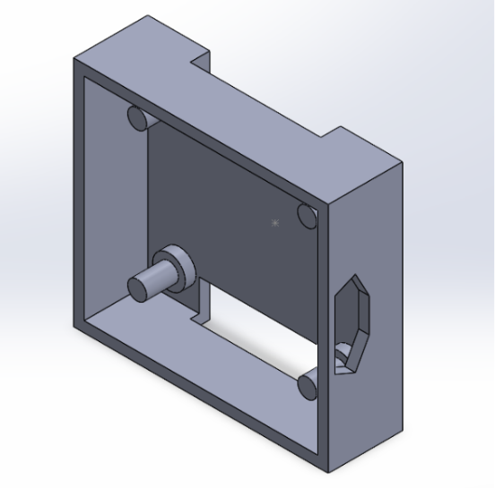
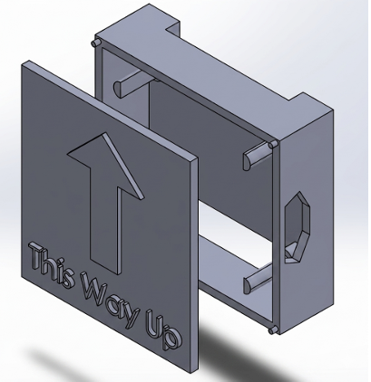
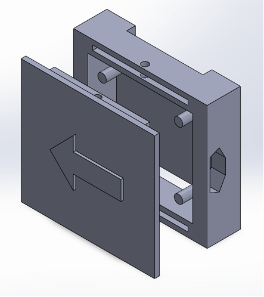
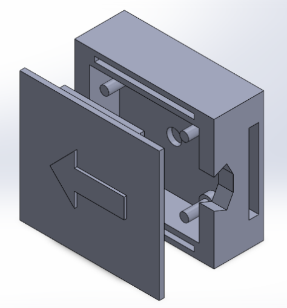
Prototyping & Development
From CAD to Physical Prototype
The finalized designs were converted into physical prototypes using FDM 3D printing. Prototyping allowed the team to evaluate fit, positioning, assembly, and stability of the wearable components before integrating the sensing hardware.
Physical testing revealed issues that were difficult to identify in CAD alone, including adjustments needed for component fit, attachment, and sensor positioning. These findings were incorporated into subsequent design iterations before the final system was used for data collection.
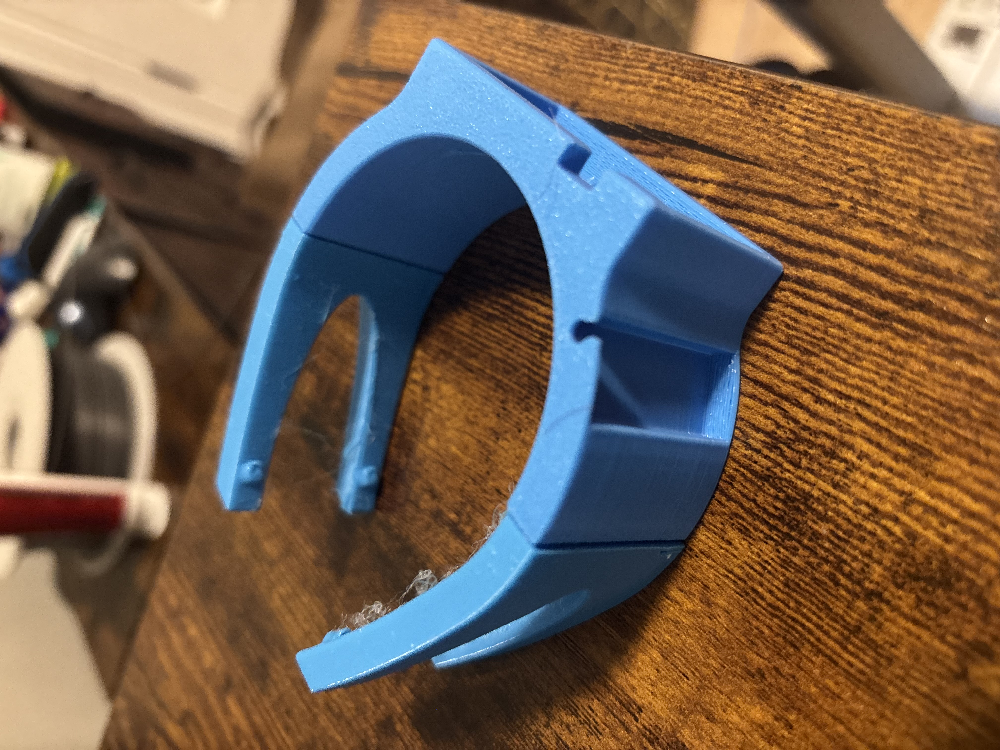
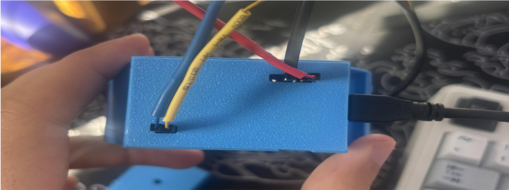
Final Prototype
The completed system integrated the heel cuff, shank hub, and sensing electronics into a wearable assembly. The final prototype was designed to maintain consistent sensor positioning while allowing the user to perform loaded ankle movements representative of those encountered during play.
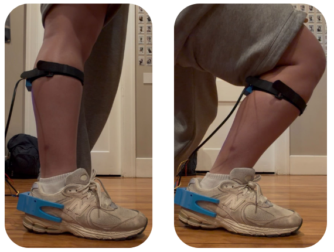
Data Collection
Measuring Ankle Motion During Pickleball
The finalized system was used to measure tibia-over-ankle angle during pickleball movement. The sensing hardware communicated with an IMU mounted in the shank hub, allowing the system to calculate loaded ankle dorsiflexion in the sagittal plane.
The measured angle was displayed through a MATLAB-based application and GUI, allowing users to observe their ankle position during movement and record measurements for later evaluation. This provided a practical way to identify whether an athlete was consistently reaching an appropriate range of loaded dorsiflexion.
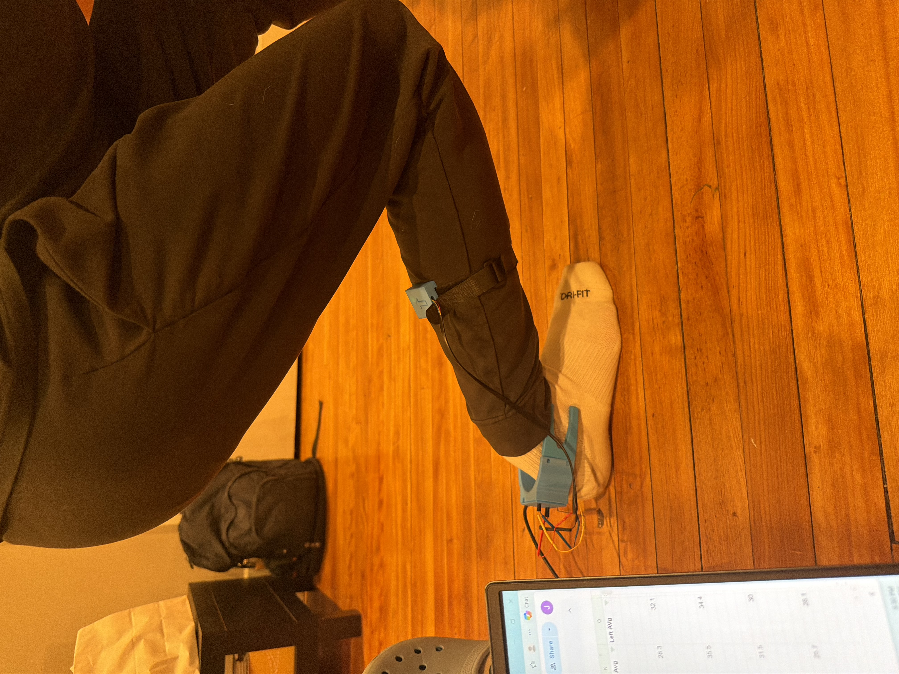
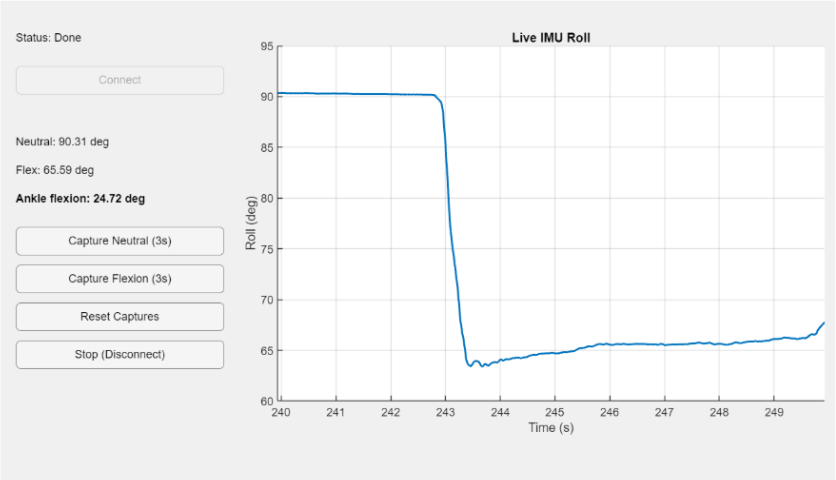
Using the Measurement in Practice
Rather than providing an immediate injury warning, the system was ultimately designed as an informational tool. Recorded measurements could be used to compare ankle motion between the left and right sides and determine whether an athlete was consistently reaching the desired range of loaded dorsiflexion.
A target range of approximately 15–30° was used as a reference for evaluating loaded ankle dorsiflexion. Measurements outside this range could identify an area for further assessment, mobility training, or other preventative strategies.
Device Documentation
Detailed documentation of the final wearable system, including device setup, component integration, and operating procedures, is provided below.
Validation & Testing
Evaluating Measurement Accuracy
With the final wearable configuration established, testing focused on determining whether the system could accurately measure the tibia-over-ankle angle used to characterize loaded ankle dorsiflexion.
The wearable system's angle measurements were compared against reference measurements obtained from recorded motion. Kinovea was used to analyze the reference motion, allowing the calculated angle from the wearable system to be compared against an independent measurement across a range of ankle positions.
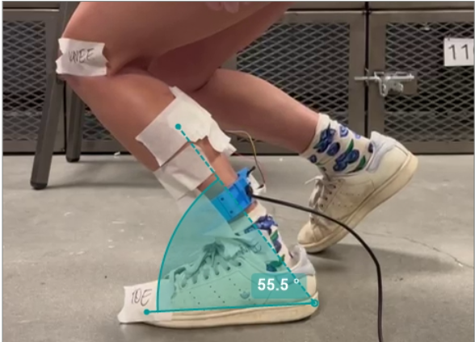
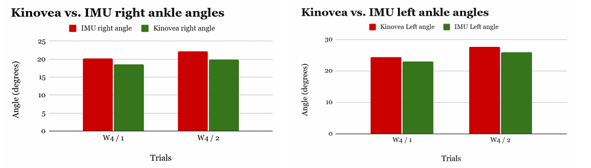
The validation testing demonstrated that the system was capable of capturing changes in tibia-over-ankle angle and producing measurements that could be compared against an independent reference. This supported the use of the system as an informational tool for monitoring loaded ankle dorsiflexion.
Results
What We Found
The final system successfully measured tibia-over-ankle angle in the sagittal plane and displayed the calculated angle through a MATLAB-based interface. This provided a practical way to monitor loaded ankle dorsiflexion during movement and identify whether measurements fell within the desired 15–30° range.
The results demonstrated the potential for a wearable system to provide users with actionable information about their ankle motion. Rather than directly preventing injury, the system was designed to increase awareness of potentially concerning movement patterns so that preventative measures could be taken.
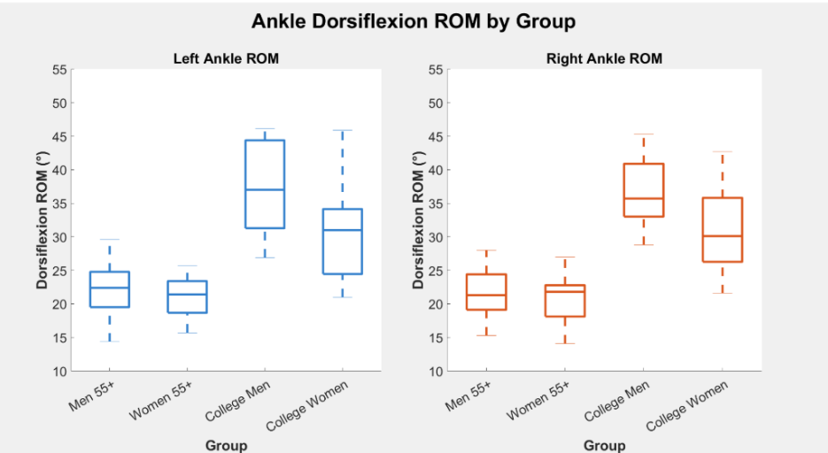
The finalized system successfully calculated tibia-over-ankle angle in the sagittal plane using the wearable IMU system.
Measurements could be compared against the desired 15–30° range of loaded ankle dorsiflexion to help identify potentially concerning movement patterns.
The finalized system measured sagittal-plane motion using a single IMU. A two-IMU configuration would be required to directly capture relative motion across all three planes.
My Contributions
My Role in the Project
As part of the multidisciplinary project team, I focused primarily on the mechanical design, prototyping, and physical development of the wearable system. I translated the system's sensor-placement and wearable-use requirements into manufacturable mechanical designs while balancing fit, structural stability, component access, and ease of assembly.
- Designed and iterated the heel cuff and shank hub components in SolidWorks, developing the geometry around the requirements of the wearable sensing system.
- Developed and refined physical prototypes through FDM 3D printing, using prototype testing to identify fit, stability, assembly, and manufacturability issues and inform subsequent design iterations.
- Contributed to the integration of the mechanical components with the FeatherSense board and IMU, ensuring the sensing hardware could be securely positioned during use.
- Supported preparation and testing of the wearable system for biomechanical data collection and validation.
- Documented design changes and used prototype observations and testing results to guide subsequent engineering revisions.
Outcome
Project Outcome
The project resulted in a functional wearable system capable of measuring tibia-over-ankle angle during loaded movement and presenting the measurement through a MATLAB-based interface. While the original concept included broader movement tracking, force sensing, and real-time injury-risk alerts, the project was ultimately refined into an informational measurement tool that could help users monitor their loaded ankle dorsiflexion and identify potentially concerning movement patterns.
The project provided experience taking a multidisciplinary biomedical engineering concept from an initial system proposal through mechanical design, CAD development, physical prototyping, sensor integration, testing, and validation. It also reinforced the importance of adapting system scope to available time and resources while preserving the core engineering objective.
Project Deliverables
Explore the Full Project
The resources below provide additional detail on the development, testing, data, and final results of the project.
Data & Analysis
Supporting datasets from the project are provided below, including measurements from older adults and college-aged participants.